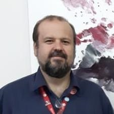

ENGENHARIA DE SOFTWARE |
|||
|
ESCOLA POLITÉCNICA Graduação em ENGENHARIA DE SOFTWARE Titulação: Bacharel Modalidade: Presencial Duração: 4 anos |
|||
Sobre o cursoO curso de Engenharia de Software foi pensado para preparar o acadêmico para os diversos desafios que ele poderá enfrentar no mercado de trabalho e também para buscar soluções que façam a diferença na sociedade. Uma das iniciativas que garantem a excelência profissional é a Wickedbotz, uma premiada equipe de robótica que participa de competições nacionais e internacionais da área, difunde o conhecimento em TI para a comunidade e desenvolve diversos projetos de pesquisa e inovação. Outro diferencial é a fábrica experimental de software, onde os acadêmicos desenvolvem projetos em parceria com empresas interessadas em criar produtos ou serviços inovadores. A profissãoO engenheiro de software desempenha um papel importante na área de tecnologia, desenvolvendo softwares para ambientes diversos. Ele desenha e testa novos programas, além de fazer sua manutenção, revisão e testes. Também pode atuar na área de jogos digitais e sistemas embarcados específicos. Levantamento divulgado em 2013 pelo The Wall Street Journal, que listou as 10 melhores e as 10 piores profissões daquele ano, constatou que a carreira de engenheiro de software é a 3ª mais prestigiada. Entre os motivos estão as boas propostas salariais, o amplo leque de oportunidades de emprego e a flexibilidade de horários. A pesquisa foi feita pela empresa global de recursos humanos CarrerCast, a partir de dados do governo dos Estados Unidos e agências de emprego. Outro diferencial é a fábrica experimental de software, onde os acadêmicos desenvolvem projetos em parceria com empresas interessadas em criar produtos ou serviços inovadores. |
Coordenadores |